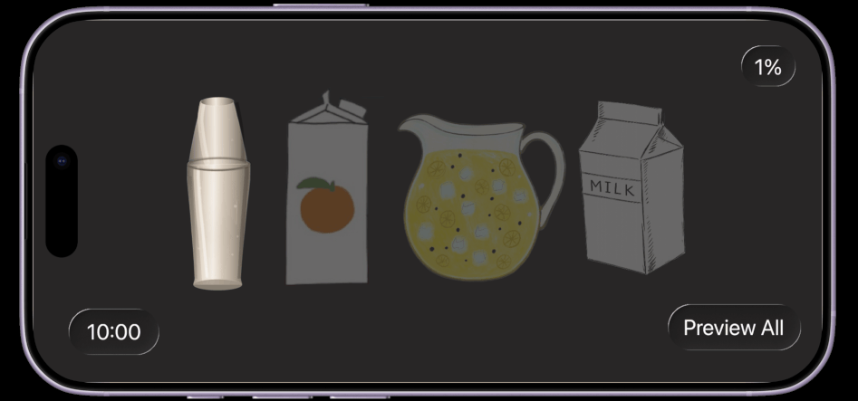
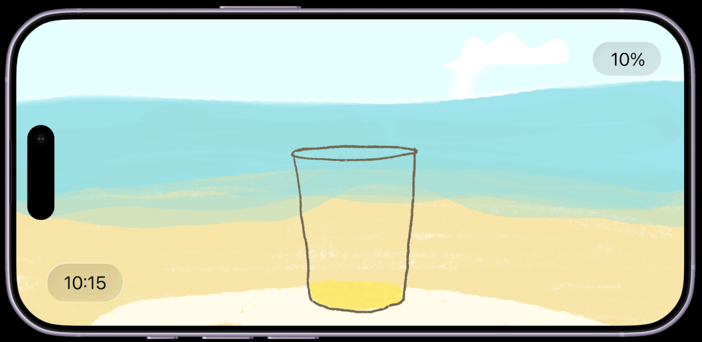
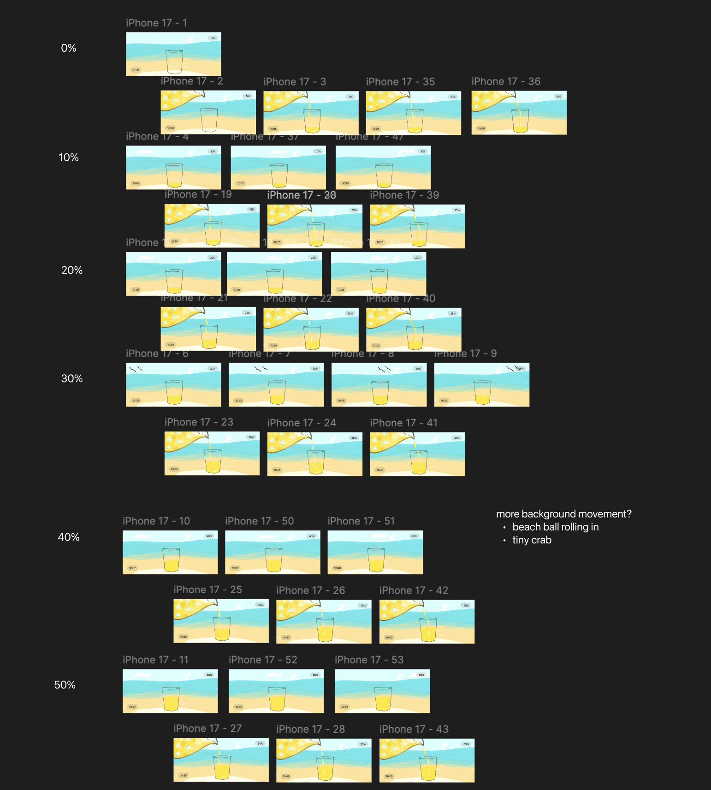

For Apple Standby Mode, we wanted to create a new experience that wasn't already within the Standby Ecosystem. We wanted a useful visualization to represent the battery percent and showcase change overtime. However, rather than having a literal battery image, we wanted our standby modes to have a pretty display that could blend into user's homes. Guiding values were sense of mindfulness and play. We chose a cheeky juice visual metaphor to represent our battery, and wanted minimal screens that were landscaped focused.
Each member created a drink. There are two day drinks and two night drinks for the "night mode."

View the complete Figma project: Standby Mode Prototype
I hand drew over 60 frames to create the animation effect. The frames were put together in Figma using prototype features. While each drink has a different visual style, some more handrawn and other smore graphic, we used consistent type to unify each prototype. We used the Apple typeface: SF Pro. We also created a landing page that mimics how users would first preview the drink options and swipe to select a drink screensaver.

While I've mostly designed for web/desktop surfaces, designing for mobile challenged me to work within the canvas constraints. Many of my earlier ideas involved data visualizations, which were very complex and may have been overwhelming for the small screen. In this project, I learned to compromise in a team and practiced using Figma to animate.